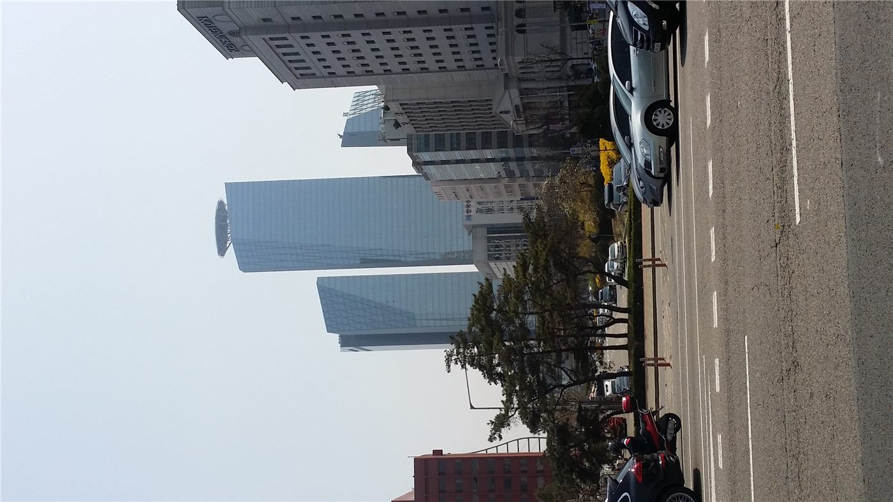

코스닥 4% 급락에 매도 사이드카 발동… 미·이란 충돌이 증시 흔들다
코스닥 지수가 장중 4% 넘게 떨어지며 매도 사이드카가 발동됐다. 중동 지정학 리스크와 국제유가 급등이 위험자산 회피 심리를 키웠다.
진태흥 기자 · 2026.07.24
橋한국

7월 20일 코스닥 시장에서 지수가 급락하자 프로그램 매도 호가의 효력을 일시 정지시키는 매도 사이드카가 발동됐다고 경향신문이 전했다. 사이드카는 선물 가격이 기준 이상 급변할 때 현물 시장의 충격을 완화하기 위해 발동되는 안정장치다.
광고 문의 · 300×250이날 급락은 미국과 이란의 군사적 충돌 격화와 국제유가 급등이 맞물린 결과로 풀이된다. 에너지 가격이 오르면 기업 비용과 물가 압력이 커지고, 투자자들은 성장주 비중이 높은 코스닥에서 먼저 발을 빼는 경향이 있다.
외국인 자금 이탈과 원화 약세도 지수에 부담을 더했다. 위험 회피가 강해지는 국면에서는 중소형 성장주가 상대적으로 큰 변동성을 보이기 쉽다.
증시 전문가들은 단기 변동성이 이어질 수 있다면서도, 사이드카·서킷브레이커 같은 안정장치가 과도한 공포 매도를 걸러 주는 기능을 한다고 설명한다.
華橋時報는 개별 종목의 매매를 권하지 않는다. 다만 국제 정세가 국내 자산 가격에 즉각 반영되는 국면에서, 재한 화인 투자자와 자영업자도 환율·물가 변화에 대비할 필요가 있다는 점을 짚어 둔다.
출처·참고 (사실 확인용 — 본문은 직접 재작성)
· 경향신문
· 경향신문